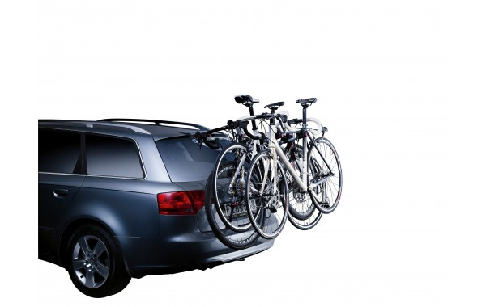

В тёплое и недождливое время года я довольно много времени провожу на велосипеде. Но поездок по городу бывает недостаточно. Возможность брать с собой велосипед всюду не была бы лишней, да и неплохо, к примеру, довезти велосипед на машине до работы, а для передвижений по центру города использовать уже его, экономя и бензин и время.
В общем, я задумался о выборе велобагажника для нашего Nissan Murano.
Велобагажники для автомобиля бывают трёх видов.
Багажник на заднюю дверь
Цена: около 7,5 тысяч рублей
Самый недорогой вариант, но я убрал его сразу. Нагрузка на петли задней двери ничего полезного двери не даст. При таком варианте дверь с велосипедами не откроешь. Да и вариант этот ещё можно рассматривать для одного-двух велосипедов. Я же хотел возить три.

Велосипеды на крышу
Цена: ~15000 рублей (поперечины у меня уже есть)
Выглядит более надёжно, но смущали несколько моментов. Во-первых Nissan Murano всё-таки высоковат и для установки велосипеду на его крышу понадобится сила и сноровка. Во-вторых было подозрение, что вырастет расход топлива. В-третьих, придётся забыть про подземные парковки (и не забыть про этот факт.)
Багажник на фаркоп
Цена: 6500 багажник + 8000 фаркоп + установка фаркопа
Самый дорогой вариант. Из минусов не верится в надёжность конструкции (багажник держится на шаре фаркопа за счёт силы трения), цена, повышенное внимание сотрудников ГИБДД (багажник будет закрывать номер и габариты). За велобагажник с функцией наклона пришлось бы добавить тысячи две рублей.
Ситуация немного накалялась из-за того, что велосипеды я планировал даже взять в путешествие по Казахстану и Киргизии.
В итоге, несмотря на то, что мой выбор не поддерживал никто, остановился на втором варианте. В магазине «Твоя стихия» купил набор из двух велокреплений Thule Proride 591.
Это не самые недорогие велокрепления, но у них есть важное преимущество — в конструкции предусмотрен специальный желоб для переднего колеса (и чуть поменьше для заднего), который упрощает установку велосипеда.
Кроме скидки по дисконтной карте я получил ещё за покупку кэшбек по карте Тиньков-банка. В итоге покупка двух багажников обошлась в 9140 рублей, что совсем неплохо для Кемерова.
Приятно порадовали продавцы-консультанты в «Твоей стихии», которые не только перебрал одно из креплений, сделав его зеркальным, но и установили багажник на крышу.
Первая же поездка в Ижморку показала, что опасения по поводу топлива не подтвердились. Расход вырос незначительно, может быть на литр. С непривычки было тревожно за велосипеды, но опыт показал, что крепятся они довольно хорошо и переживать причины нет.
С установкой велосипедов также проблем не возникает. Осталось только докупить третий багажник.